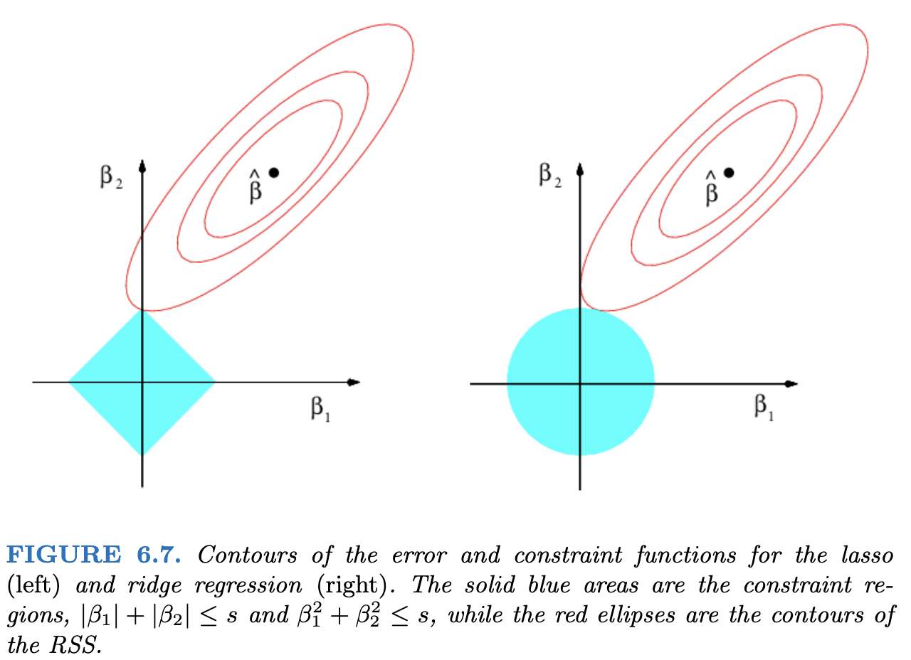

19 Regularization Methods
19.1 Loss Functions
Why are we minimizing the sum of squares?
The MSE is defined as: \[ MSE(\underline\beta) = \frac{1}{n}\sum_{i=1}^n\left(y_i-\beta_0-\sum_{j=1}^p\beta_jx_{ij}\right)^2 \] This is the Maximum Likelihood Estimate, which seeks to model the mean of \(Y\) at each value of \(X\), \(E(Y) = X\underline\beta\), with Gaussian errors.
MSE, seen as a function of \(\underline\beta\), is a loss function, i.e. the function we minimize to find our estimates.
But it’s FAR from the only loss function.
Other loss functions
By minimizing \[ MAE(\underline\beta) = \frac{1}{n}\sum_{i=1}^n\left|y_i-\beta_0-\sum_{j=1}^p\beta_jx_{ij}\right| \] we end up estimating the \(median\) of \(Y\).
Others:
- Mean Absolute Log Error
- Lower penalty for larger errors.
- More robust to outliers?
- Mean Relative Error
- Penalize errors relative to size of \(y\) (larger errors at large \(y\) values aren’t as big of a deal).
- Assumes that variance depends on mean (kinda like Poisson).
- etc.
Examples
- 0.5 hectares verus 4 hectares can make a huge difference
- 100 versus 150, congrats on the great prediction!
- Predicting an income of 15,000 versus 25,000 is big
- Modelling the average income is not usually reasonable.
Loss Function Summary
- Minimize the loss function with respect to the parameters of interest.
- For the same parameters, there can be many loss functions.
- Other names:
- Likelihood function (special case of loss function)
- Cost function (synonym)
19.2 Regularization
Regular Methods
Ordinary least squares is a minimization problem: \[ RSS = \sum_{i=1}^n\left(y_i-\beta_0-\sum_{j=1}^p\beta_jx_{ij}\right)^2 \]
What if I don’t like how big the \(\underline\beta\) values are?
Regularization Constraints
Let’s arbitrarily say that \(\sum_{j=1}^p \beta_j = 10\).
With this constraint, one large \(\beta_j\) can be countered by a large negative \(\beta_k\).
Regularizing with Norms
The \(L_p\)-norm of a vector is: \[ ||\beta||_p = \left(\sum_{j=1}^p|\beta|^p\right)^{1/p} \]
- When \(p = 2\), this is the Euclidean distance.
- Pythagoras strikes again!
- When \(p = 1\), this is the sum of absolute values.
- When \(p=\infty\), this ends up being max(\(|\underline\beta|\)).
- Not useful for our purposes, but interesting!
Why choose \(||\underline\beta||_p = 10\)?
Or, in general, why choose a particular value of \(s\) in \(||\underline\beta||_p = s\)?
There’s no good reason to choose a particular value of \(s\), but regularizing stops us from having steep slopes for predictors that aren’t actually related.
In other words, we ignore spurious patterns!
Too little regularization and we just have the OLS estimate. Too much regularization and we restrict the parameters too much.
Choosing \(s\) in \(||\underline\beta||_p = s\)
- Recall: more flexible models are able to estimate more subtle patterns, but may find patterns that aren’t there.
- Too flexible = bad out-of-sample prediction.
- For linear models, the least flexible model is one where all \(\beta_j\) values are given a fixed value.
- For example, all are 0.
For a linear model, restricting the values with \(||\underline\beta||_p = s\) reduces flexibility, which can improve out-of-sample prediction performance.
MLE estimates of \(\underline\beta\) are unbiased
… therefore constrained estimates are biased.
But what about the scales of the features?
What a great question! Thank you so much for asking! You must be smart.
For \(||\underline\beta||_p\) to make sense, the predictors must all have the same scale.
This is accomplished by standardizing the features: Replace each \(x_{ij}\) with \[ \frac{x_{ij} - \bar{\mathbf{x}_{j}}}{\frac{1}{n}\sum_{i=1}^n(x_{ij} - \bar{\mathbf{x}_{j}})^2} \]
Predictors must be standardized for regularization to be valid!
Choosing \(\lambda\) via cross-validation
- For each value of \(\lambda\):
- Split data into 5 “folds”.
- For each “fold”:
- Set aside the data points in the current fold.
- Fit the model to data in all other “folds” using your value of \(\lambda\).
- Predict the missing points, record the average error.
Choose the lambda with the lowest out-of-sample prediction error.
Cross-Validation

Special Cases of Regularization: \(L_1\) or \(L_2\)?
So far, we’ve been talking about general \(L_p\) norms, i.e. \(||\underline\beta||_p\).
- \(L_1\): LASSO
- \(L_2\): Ridge
Geometric Interpretation (Contours of the RSS)

- LASSO will set coefficients to 0.
- “Least Absolute Shrinkage and Selection Operator”
- Ridge has less variance (why?)
Shiny Example
The following app demonstrates what it means to restrict the sum of the parameters.
The x axis is the potential values of \(\beta_1\) and the y is \(\beta_2\). The colours represent the value of the SSE, \(\sum_{i=1}^n(y_i - \beta_1x_{i1} - \beta_2x_{i2})^2\). The coefficients that we get from a linear model are the ones that minimize this sum, represented as the green point.
The app only draws the SSE values for parameters \(\beta_1, \beta_2\) that satisfy \(|\beta_1| +|\beta_2| \le s\), where \(s\) is chosen in the slider.
The app takes a minute or two to load - it’s running purely in your browser.
#| standalone: true
#| viewerHeight: 1000
#| viewerWidth: 700
#library(shiny)
library(MASS)
library(viridisLite)
myseed <- 57362
ui <- fluidPage(
sidebarPanel(
sliderInput("b1", "True value of beta_1", -2, 2, 2, 0.1),
sliderInput("b2", "True value of beta_2", -2, 2, 2, 0.1),
sliderInput("corr", "Correlation between predictors", -1, 1, 0.5, 0.1),
sliderInput("s", "Restriction on sum of abs(beta)", 0, 5, 5, 0.1),
actionButton(inputId = "doit", label = "Click me for new data")
),
mainPanel(plotOutput("plot"), )
)
server <- function(input, output) {
new_seed <- reactive({
input$doit
myseed <<- myseed + 1
})
make_data <- reactive({
set.seed(myseed)
input$doit
X <- mvrnorm(100, mu = c(0, 0),
Sigma = matrix(c(1.5, input$corr, input$corr, 1), ncol = 2))
x1 <- X[, 1]
x2 <- X[, 2]
y <- input$b1 * x1 + input$b2 * x2 + rnorm(100, 0, 3)
beta_grid <- expand.grid(
beta_1 = seq(-2, 3, by = 0.05),
beta_2 = seq(-2, 3, by = 0.05)
)
beta_grid$sum <- rowSums(abs(beta_grid))
beta_grid$sse <- sapply(1:nrow(beta_grid), function(x) {
sum((y - beta_grid[x, 1] * x1 - beta_grid[x, 2] * x2)^2)
})
unrestricted_min <- beta_grid[which.min(beta_grid$sse),]
beta_grid <- beta_grid[beta_grid$sum < input$s, ]
restricted_min <- beta_grid[which.min(beta_grid$sse),]
add_points <- rbind(unrestricted_min, restricted_min)
add_points$Restriction <- c("Unrestricted",
paste0("sum(abs(beta)) < ", input$s))
list(beta_grid = beta_grid, add_points = add_points)
})
output$plot <- renderPlot({
new_seed()
new_data <- make_data()
beta_grid <- new_data$beta_grid
add_points <- new_data$add_points
n_cols <- 20
cols <- viridis(n_cols)
rank <- as.factor(as.numeric(cut(beta_grid$sse, n_cols)))
plot(beta_2 ~ beta_1, data = beta_grid,
col = cols[rank], pch = 15, asp = 1,
xlim = c(-2, 2), ylim = c(-2, 3))
points(x = add_points[1, 1], y = add_points[1, 2],
col = "green", pch = 16, cex = 3)
points(x = add_points[2, 1], y = add_points[2, 2],
col = "red", pch = 1, cex = 3, lwd = 6)
})
}
shinyApp(ui = ui, server = server)Langrangian Multipliers and Estimation
Wikipedia screenshot:

Lagrangian Multipliers and Estimation
Minimize \(MSE(\underline\beta)\) subject to \(||\underline\beta||_p = s\).
is equivalent to
Minimize \(MSE(\underline\beta) + \lambda||\underline\beta||_p\)
For the rest of your life, this is the way you’ll see Ridge and LASSO.
- Ridge: Analytical solution, can calculate an arbitrary number of \(\lambda\) values at once.
- LASSO: Non-iterative numerical technique
For the curious, converting between \(s\) and \(\lambda\) is not straightforward.
Ridge Regularization
- One of the coefficients increases with a tighter constraint!
LASSO Feature Selection as we Vary \(\lambda\)
- As \(\lambda\) increases, more coefficients are allowed to be non-zero.
- If \(\lambda\) doesn’t constrain, we get the least squares estimate.
- Denoted as \(\hat\beta\) in the plot.
Personal Opinion Time
With the existence of LASSO, there’s no reason to do automated feature selection.
Best subset selection can be written as: \[ \text{Minimize } MSE(\underline\beta)\text{ subject to }\sum_{j=1}^pI(\beta\ne 0) \le s \] This can minimize out-of-sample error, but results in something that could be mistaken for inference.
With LASSO, you know the estimates are biased and you know why. Best subset tricks you into thinking your \(\underline\beta\) estimates are accurate - they are not.
Implementation in R: glmnet
- The
glminglmnetis because it fits all GLMs.- Including Logistic Regression.
- The
family = binomialargument works as inglm()- However,
family = "binomial"is an optimized version.
- However,
- The
netinglmnetrefers to elasticnet.- Next slide or two.
Elastic Net: Like a lasso, but more “flexible”
\[ \text{Minimize } MSE(\underline\beta) + \lambda\left[\alpha||\underline\beta||_1 + (1-\alpha)||\underline\beta||_2\right] \]
Elastic Net is “doubly regularized”.
Elastic net needs more time to fit and needs more data.
Elasticnet and LASSO/Ridge
\[ \text{Minimize } MSE(\underline\beta) + \lambda\left[\alpha||\underline\beta||_1 + (1-\alpha)||\underline\beta||_2\right] \]
- \(\alpha = 0 \implies\) Ridge
- \(\alpha = 1 \implies\) LASSO
Here’s an example of LASSO in R. We’ll load in the Wage data from ISLR2 package1.
This data set has a column for wage and a column for logwage. We’re going to use wage as our response, and removing wage makes it easier to tell R to use all columns other than logwage. I also remove region since there are some regions with too few observations and I am not going to set up cross-validation appropriately for this scenario.
glmnet doesn’t use the formula notation (y ~ x); we have to manually set up the design matrix (including dummy variables) and the response vector.
The first step to fitting a LASSO model is choosing \(\lambda\) via cv. The cv.glmnet() function does this for us. The results are not a final model; the resultant object gives us an idea of which value of \(\lambda\) is appropriate.
The first dotted line indicates the value of \(\lambda\) that minimizes the “loss function.” However, across different samples we would get different values of \(\lambda\). Because we know there’s randomness, we know that a slightly larger (more restrictive) value of \(\lambda\) would also be consistent with our data. Since cross-validation emulates the idea of having many samples, we can get an estimate of the standard error of \(\lambda\). We can then choose the value of \(\lambda\) that is within 1 standard error of the minimum. This gives a much simpler model while still having a plausible \(\lambda\).2
Now that we have a way of telling R what value we want for lambda, we can fit the model.
The output isn’t very informative, but the model can make predictions via the predict() function and these will be comparable or better than the predictions from an unconstrained linear model.
Let’s compare the coefficient values to see the shrinkage in action! Of course, glmnet standardizes by default, so we need to ensure that the linear model is based on standardized predictors.
In the output, I include a column for the difference in the coefficients. Specifically, it’s lm minus lasso, so we may expect “shrinkage” to mean that the lasso estimates are smaller.
The estimates aren’t all smaller! Lasso chose to set some to 0, which freed up some coefficient “budget” to spend elsewhere.
ISLR stands for Introduction to Statistical Learning with R, a fantastic (and free) book if you want to learn more advanced topics in predictive modelling!↩︎
This is similar to the Box-Cox transformation, where we find a bunch of plausible transformations, and go with a simple one like
\log()orsqrt().↩︎